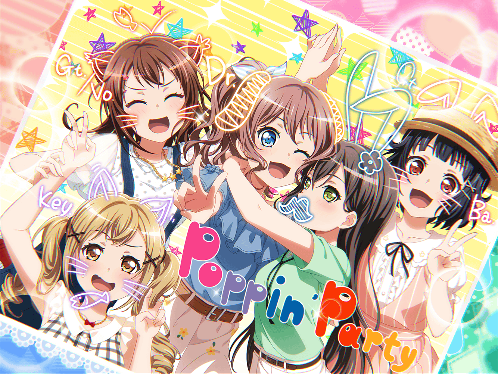

放課後
花咲川女子学園 廊下
沙綾
このおたえのヒゲ……
ふふ、ダメだ……
これ見るとどうしてもあれを思い出して笑っちゃう……
彩
沙綾ちゃん♪
沙綾
あ、彩先輩！
どうも、こんにちは
彩
なんか今、すっごい嬉しそうな顔してたね？
なんかいいことあった？
沙綾
あ、見られちゃいました……？
実はこれを見てたんです
彩
あ、キラプリ！？
沙綾
この前、ショッピングモールに遊びに行った時、
みんなで撮ったんです
彩
わ～、みんな楽しそう！
……ん？ たえちゃんのこれは……？
沙綾
あ……
やっぱり気づいちゃいました……？
彩
うさぎの耳に、貴族みたいなヒゲ……？
なかなかインパクトあるけど……
沙綾
そ、それにはあまり触れないでください……
ちょっと間違えちゃって
彩
そうなんだ……
けど、みんなで楽しんでるのが伝わってくる
いいキラプリだね！
沙綾
普段、スマホで写真とか撮りますけど、
キラプリって特別っていうか、記念って感じしますよね
彩
そう！ それなの！
沙綾ちゃん、わかってるー！
彩
ねえ、ちょっとよく見せてくれる？ そのキラプリ
沙綾
そんなにまじまじと見られると、なんか恥ずかしいですね……
はい、どうぞ
彩
なるほど～、香澄ちゃんと有咲ちゃんは猫の耳なのかな？
沙綾
香澄が描いてほしいって言ってたんで。
慣れないけど、描いてみました
彩
ホントにみんな楽しそう！
……ただ
沙綾
え？
彩
惜しいなー……
沙綾
惜しい……？
ど、どういう意味ですか？
彩
このキラプリは、かなりいい線いってるよ。
けど、もうちょっとだけ工夫したら、
さらにいいキラプリになると思うんだ
沙綾
工夫……ですか？
彩
例えば、キラプリの中での立ち位置！
全体的にもうちょっと後ろに立ったほうが、
小顔に見えるよ
沙綾
た、立ち位置……ですか。
そ、そんなことまで考えなかった……
彩
あとはポーズだね。
指を使って、さり気なく輪郭を隠すの。
そうしたらさらに小顔に見えるでしょ？
沙綾
は、はぁ……
彩
私はよくピースとかで隠してるけど、
それがあるだけで見え方が全然違うから！
沙綾
な、なるほどぉ……
そんなテクニックがあったんですね……
彩
あとは……うーん、そうだなあ〜……
彩
あ！ これは絶対やったほうがいいことなんだけど――
沙綾
（キラプリって……戦いなんだ……）
10分後
彩
うん、こんなところかな。
これを押さえれば、もっとかわいく撮れるはずだよ！
沙綾
い、いろいろ勉強になりました。
今度みんなで撮る時は、彩先輩の直伝のテクニック、
使わせてもらいますね
彩
うん、キラプリは一日にしてならず！
一気に全部やろうとしないで、ちょっとずつだよ！
沙綾
はい！ ありがとうございます
彩
……あ！ ごめん！
一番大事なコツ伝え忘れてた！ 危ない危ない！
沙綾
一番大事なコツ？
なんですか、それって？
彩
それは……
とにかく、大好きな友達と一緒に撮ること
彩
そしたら、自然といい笑顔になるからね！
沙綾
大好きな友達、と……
沙綾
ふふ、それなら大丈夫そうです！
私にとって、ポピパが一番居心地のいい場所、ですから！
彩
うんっ、その笑顔。
すっごい説得力ある！
沙綾
いろいろ教えてくれてありがとうございます！
あ、そうだ！
今度、キラプリ撮りに行きません？
彩
もっちろん、いいよ！
えへへ、楽しみ～！ どんな感じで撮ろうかな〜
沙綾
私も、彩先輩の数々のテクニックを間近で見るの、
楽しみにしてますねっ！